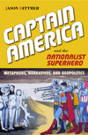
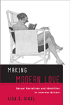
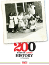

|
A City within a City
The Black Freedom Struggle in Grand Rapids, Michigan
Robinson, Todd E.
A view of the civil rights movement in the crucible of the North
248 pp • 6x9 • Fall 2012
paper 978-1-4399-0922-5
cloth 978-1-4399-0921-8 |
|
Black Regions of the Imagination
African American Writers between the Nation and the World
Dunbar, Eve
Establishing an imaginative space for blackness, four mid-century American writers resist literary segregation
232 pp • 5.5x8.25 • Fall 2012
paper 978-1-4399-093-0
cloth 978-1-4399-0942-3 |
|
Blow Up the Humanities
Miller, Toby
A crisp and engaging book that proposes how to save the dying humanities
172 pp • 5.5x8.25 • Fall 2012
paper 978-1-4399-0983-6
cloth 978-1-4399-0982-9 |
 |
Captain America and the Nationalist Superhero
Metaphors, Narratives, and Geopolitics
Dittmer, Jason
A provocative exploration of the nationalist superhero genre in the United States, Canada, and Britain
242 pp • 6x9 • Fall 2012
paper 978-1-4399-0977-5
cloth 978-1-4399-0976-8 |
|
Chang and Eng Reconnected
The Original Siamese Twins in American Culture
Wu, Cynthia
Considering Chang and Eng's body in America from the nineteenth century to the present
218 pp • 6x9 • Fall 2012
paper 978-1-4399-0869-3
cloth 978-1-4399-0868-6 |
|
Cheaper by the Hour
Temporary Lawyers and the Deprofessionalization of the Law
Brooks, Robert A.
How attorneys' work is deprofessionalized, downgraded, and controlled through part-time and temporary assignments
New in Paperback!
234 pp • 6x9 • Fall 2012
paper 978-1-4399-0286-8 |
|
Church and State in the City
Catholics and Politics in Twentieth-Century San Francisco
Issel, William
How Catholic religious activism shaped the language and outcome of San Francisco's debates about the common good and the public interest
330 pp • 6x9 • Fall 2012
paper 978-1-4399-0992-8
cloth 978-1-4399-0991-1 |
|
Cinemas in Transition in Central and Eastern Europe after 1989
edited by Portuges, Catherine and Peter Hames
An examination of Eastern European cinema a generation after the end of the Cold War
288 pp • 6x9 • Fall 2012
cloth 978-1-59213-265-2 |
|
The City on the Hill from Below
The Crisis of Prophetic Black Politics
Marshall, Stephen H.
A compelling conversation between African American political intellectuals and the canon of western political philosophy
New in Paperback!
250 pp • 6x9 • Fall 2012
paper 978-1-4399-0656-9 |

|
East Is West and West Is East
Gender, Culture, and Interwar Encounters between Asia and America
Kuo, Karen
How race, gender, and sexuality were reimagined in the interwar encounters of Asians and Americans
220 pp • 5.5x8.25 • Fall 2012
paper 978-1-4399-0587-6
cloth 978-1-4399-0586-9 |
|
Elements of Discipline
Nine Principles for Teachers and Parents
Greenspan, Stephen, foreword by Arnold J. Sameroff
How teachers and parents can cultivate competent, happy children using a few simple principles as their guide
212 pp • 6x9 • Fall 2012
paper 978-1-4399-0897-6
cloth 978-1-4399-0896-9 |
|
Fire on the Prairie
Harold Washington, Chicago Politics, and the Roots of the Obama Presidency
Rivlin, Gary
A revised edition of the classic story of race and power, set in Chicago during the 1980s, when this most political of cities elected its first black mayor
312 pp • 6x9 • Fall 2012
paper 978-1-4399-0492-3
cloth 978-1-4399-0491-6 |
|
In a Queer Voice
Journeys of Resilience from Adolescence to Adulthood
Sadowski, Michael, foreword by Carol Gilligan
In-depth interviews show us how LGBTQ youth survive adolescence, thrive as adults, and find a voice that is uniquely their own
210 pp • 6x9 • Fall 2012
paper 978-1-4399-0802-0
cloth 978-1-4399-0801-3 |
|
The International Monetary Fund and Latin America
The Argentine Puzzle in Context
Kedar, Claudia
Chronicling the sometimes questionable relationship between the International Monetary Fund and Latin America from 1944 to the present
264 pp • 6x9 • Fall 2012
cloth 978-1-4399-0909-6 |
|
Just Who Loses?
Discrimination in the United States, Volume 2
Lucas, Samuel Roundfield
A rich vein of data that lays bare pervasive discriminatory environments and their systemic consequences for both targets and non-targets of discrimination
370 pp • 6x9 • Fall 2012
cloth 978-1-4399-0850-1 |
 |
Making Modern Love
Sexual Narratives and Identities in Interwar Britain
Sigel, Lisa Z.
How people used popular culture between the world wars to articulate sexual identities and practices
244 pp • 6x9 • Fall 2012
paper 978-1-4399-0805-1
cloth 978-1-4399-0804-4 |
|
Music, Style, and Aging
Growing Old Disgracefully?
Bennett, Andy
A vivid look at how musical taste and age become tantalizingly intertwined
226 pp • 5.5x8.25 • Fall 2012
paper 978-1-4399-0808-2
cloth 978-1-4399-0807-5 |
|
Nearest East
American Millennialism and Mission to the Middle East
Kieser, Hans-Lukas
How missionaries and evangelical politics influenced American government policy in the Middle East
New in Paperback!
224 pp • 6x9 • Fall 2012
paper 978-1-4399-0223-3 |
|
No More Invisible Man
Race and Gender in Men's Work
Wingfield, Adia Harvey
Making visible the experiences of black professional men in white male-dominated occupations
212 pp • 5.5x8.25 • Fall 2012
paper 978-1-4399-0973-7
cloth 978-1-4399-0972-0 |
|
On Intellectual Activism
Collins, Patricia Hill
From the author of the classic Black Feminist Thought, a book on the nature and value of the public intellectual
278 pp • 6x9 • Fall 2012
paper 978-1-4399-0961-4
cloth 978-1-4399-0960-7 |
|
Rebuilding the News
Metropolitan Journalism in the Digital Age
Anderson, C.W.
An inside account of dramatic changes in journalism in Philadelphia news organizations
218 pp • 6x9 • Fall 2012
paper 978-1-4399-0934-8
cloth 978-1-4399-0933-1 |
|
Selecting Women, Electing Women
Political Representation and Candidate Selection in Latin America
Hinojosa, Magda
Offers an analytic framework to show how the process of candidate selection often limits the participation of women in various Latin American countries
240 pp • 6x9 • Fall 2012
paper 978-1-4399-0848-8
cloth 978-1-4399-0847-1 |
|
Self-Determination without Nationalism
A Theory of Postnational Sovereignty
Dahbour, Omar
Urging for a move toward a new concept of "ecosovereignty," based on a reformulation of political self-determination
272 pp • 6x9 • Fall 2012
cloth 978-1-4399-074-1 |
|
Speaking of Race and Class
The Student Experience at an Elite College
Aries, Elizabeth with Richard Berman
A sequel to the insightful Race and Class Matters at an Elite College that examines the challenges of diversity from freshman orientation to graduation
238 pp • 6x9 • Fall 2012
paper 978-1-4399-0967-6
cloth 978-1-4399-0966-9 |
|
Sport and Neoliberalism
Politics, Consumption, and Culture
edited by Andrews, David L., and Michael L. Silk
How neoliberal politics appropriates sports for its own ends
322 pp • 6x9 • Fall 2012
paper 978-1-4399-0504-3
cloth 978-1-4399-0503-6 |
|
Sportista
Female Fandom in the United States
Markovits, Andrei S., and Emily Albertson
The travails in the changing world of women as athletes and sports fans
268 pp • 6x9 • Fall 2012
paper 978-1-4399-0964-5
cloth 978-1-4399-0963-8 |
|
The Steelers Encyclopedia
Finder, Chuck
The definitive history of the Pittsburgh Steelers
336 pp • 8.375x10.875 • Fall 2012
cloth 978-1-4399-0832-7 |
|
Suspect Citizens
Women, Virtue, and Vice in Backlash Politics
Boryczka, Jocelyn M.
A groundbreaking study of how concepts of virtue and vice are used to deny American women full political membership
216 pp • 5.5x8.25 • Fall 2012
paper 978-1-4399-0894-5
cloth 978-1-4399-0893-8 |
|
Sustainable Failures
Environmental Policy and Democracy in a Petro-dependent World
Cable, Sherry
Examines environmental policy from a sociological perspective, showing how our petro-dependency causes unprecedented environmental damage and threatens our democracy
242 pp • 6x9 • Fall 2012
paper 978-1-4399-0900-3
cloth 978-1-4399-0899-0 |
|
Teaching Marianne and Uncle Sam
Public Education, State Centralization, and Teacher Unionism in France and the United States
Toloudis, Nicholas
A comparative historical study of the rise of teacher power and the state in France and the United States
230 pp • 6x9 • Fall 2012
cloth 978-1-4399-0906-5 |

|
Technocapitalism
A Critical Perspective on Technological Innovation and Corporatism
Suarez-Villa, Luis
A radical critique of a new phase of capitalism grounded in corporate power and its exploitation of technological creativity
New in Paperback!
230 pp • 5.5x8.25 • Fall 2012
paper 978-1-4399-0043-7 |

|
Transnationalizing Viet Nam
Community, Culture, and Politics in the Diaspora
Valverde, Kieu-Linh Caroline
Tracing the ties that connect diasporic Vietnamese to each other and to their homeland
198 pp • 6x9 • Fall 2012
cloth 978-1-4399-0679-8 |
 |
200 Years of Latino History in Philadelphia
Al Día, The Staff of
A celebration of Latino history in the City of Brotherly Love
200 pp • 8.5x11 • Fall 2012
cloth 978-0-578-10660-1 |
|
Under New Management
Universities, Administrative Labor, and the Professional Turn
Martin, Randy
A balanced review of the changing nature of the corporate university
New in Paperback!
272 pp • 6x9 • Fall 2012
paper 978-1-4399-0696-5 |
|
Vigilantes and Lynch Mobs
Narratives of Community and Nation
Arellano, Lisa
Vigilantes and lynch mobs not only usurped the authority of the law, they shaped the histories of their actions
204 pp • 6x9 • Fall 2012
paper 978-1-4399-0845-7
cloth 978-1-4399-0844-0 |
|
Where Rivers Meet the Sea
The Political Ecology of Water
Kane, Stephanie C.
A creative, narrative approach to environmental destruction in urban waterscapes, focusing on neighborhood activists who pressure their governments to follow existing law
246 pp • 6x9 • Fall 2012
paper 978-1-4399-0931-7
cloth 978-1-4399-0930-0 |
|
Workers of the World, Enjoy!
Aesthetic Politics from Revolutionary Syndicalism to the Global Justice Movement
Tucker, Jr., Kenneth H.
The rise of the public sphere, as chronicled by social movements spanning the nineteenth, twentieth, and twenty-first centuries
New in Paperback!
224 pp • 5.5x8.25 • Fall 2012
paper 978-1-59213-765-7 |
Click here
to download the catalog (pdf). |